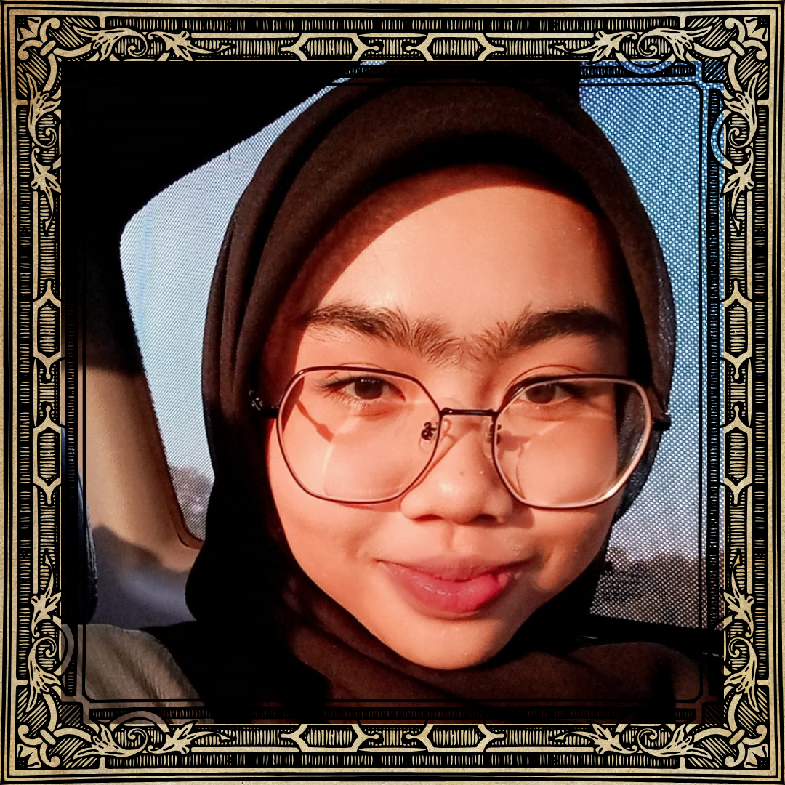
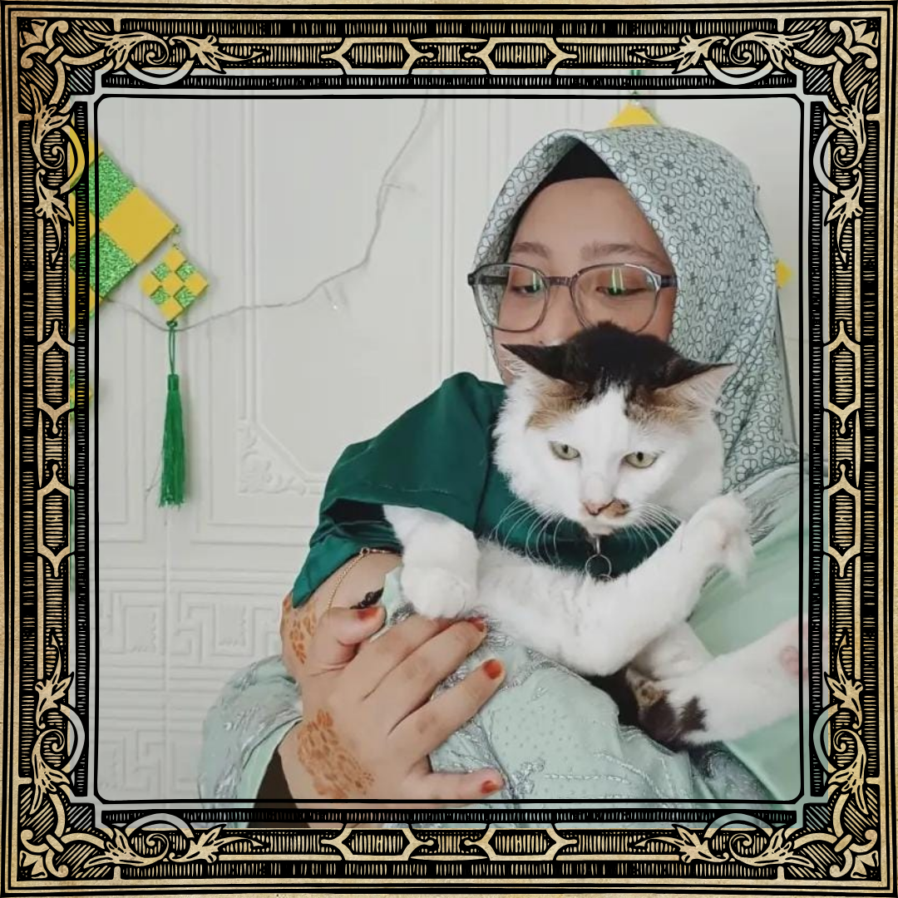
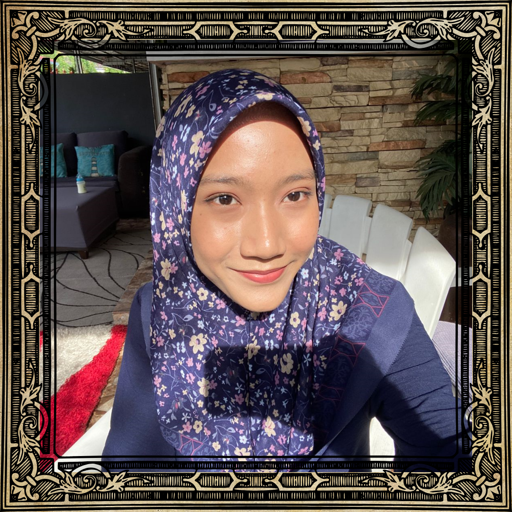
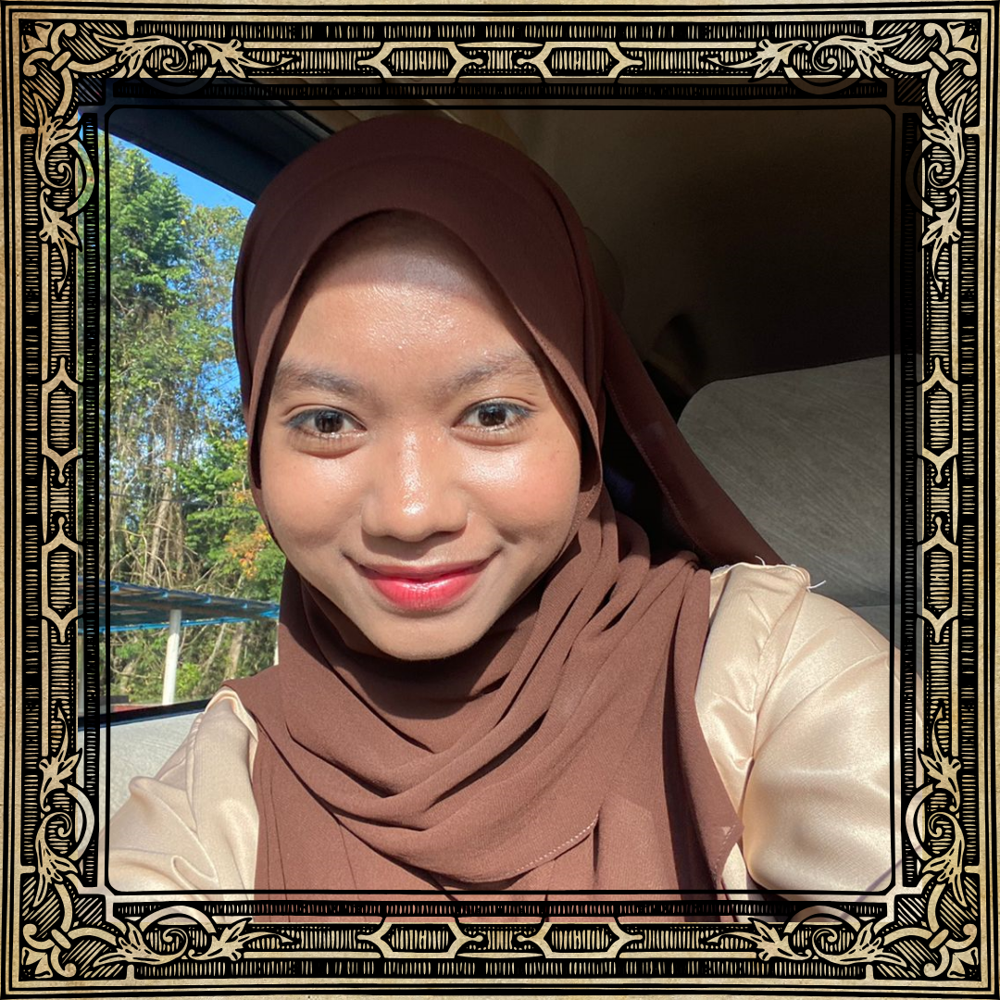

|

|
“It is not so much our friends' help that helps us as it is, as the confidence of their help.” - Epicurus
|
- BATRISYIA -
PROFILE
- Name: Nur Batrisyia Najihah Binti Mohamad Zulkifli
- Date of Birth: 20 November 2004
- Lives in : Jitra, Kedah
PREFERENCES
- Favourite Animals: Cats
- Favourite Beverage: Strawberry Milkshake
- Favourite Food: Cheesecake
- Favourite Colours: Blue
- Favourite Shows: 9-1-1
PERSONAL TRAITS
- Characteristics: Ambivert, Observant, Perceiving
|
- AMIRA -
PROFILE
- Name: Nor Amira Shazana Binti Saifulnizar
- Date of Birth: 29 August 2004
- Lives in : Kedah
PREFERENCES
- Favourite Animals: Cats
- Favourite Beverage: Coffee
- Favourite Food: Fried Rice
- Favourite Colours: Blue
- Favourite Shows: Ninjago
PERSONAL TRAITS
- Characteristics: Easy Going, Friendly ,Funny
|
"Good friends, good books and a sleepy conscience: this is the ideal life." - Mark Twain
|

|
|

|
"Friends are as companions on a journey, who ought to aid each other to persevere in the road to a happier life." - Pythagoras
|
- AISYAH-
PROFILE
- Full Name: Aisyah Syafiah Binti Mohamad Azrol
- Date of Birth: 9 June 2004
- Lives in : Serdang, Kedah
PREFERENCES
- Favourite Animals: Alfa Cats
- Favourite Beverage: Coffee
- Favourite Food: Western Food
- Favourite Colours: Black and White
- Favourite Shows: Twilight
PERSONAL TRAITS
- Characteristics: Kind and Cute
|
- AINA-
PROFILE
- Name: Nurul Aina Adibah Binti Abdul Halim
- Date of Birth: 2O May 2004
- Lives in : Kedah
PREFERENCES
- Favourite Animals: Cats
- Favourite Beverage: Soft Drinks
- Favourite Food: Laksa/Tomyam
- Favourite Colours: Purple
- Favourite Shows: Disney
PERSONAL TRAITS
- Characteristics: Friendly and Funny
|
"I don't need a friend who changes when I change and who nods when I nod; my shadow does that much better." – Plutarch
|

|